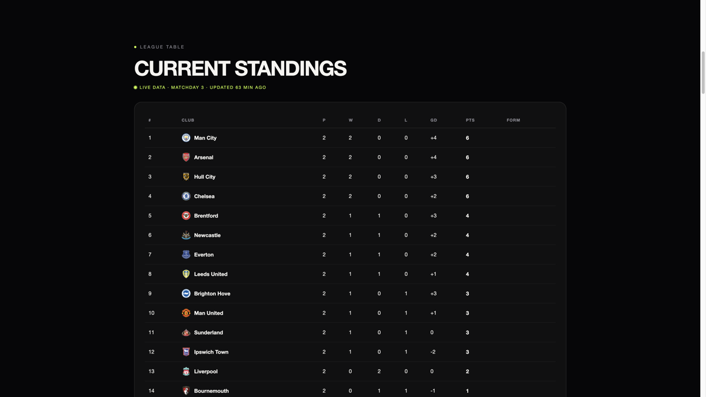
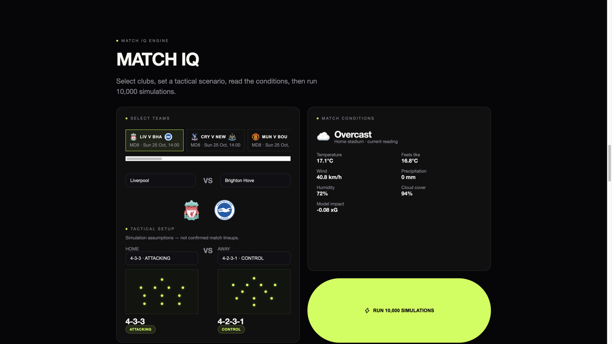
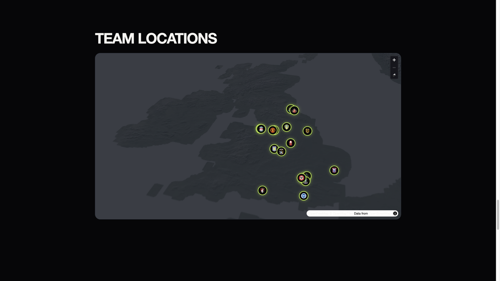

PremierIQ
Sep 2026 · personal project



1. Purpose and tech stack
PremierIQ is a Premier League dashboard. I built it to practise mixing live sports data with a statistical model, without pretending the feed has injuries, confirmed lineups, or betting odds. The numbers come from a Poisson Monte Carlo engine in NumPy. Gemini is optional and only writes a briefing from that JSON.
| Layer | Choice | Reason |
|---|---|---|
| API | Python, FastAPI, NumPy | Standings, squads, weather, Match IQ and Season IQ on one process |
| Football data | football-data.org v4 | Premier League table, teams, matches, scorers. About 10 requests a minute on the free tier |
| Weather | OpenWeather, Open-Meteo fallback | Current conditions at the home stadium when a sim runs |
| Briefing text | Gemini 3.8 Flash (optional) | Narrates Monte Carlo JSON only. Missing key means ai is null |
| UI | Next.js 15, React 19, TypeScript, MapLibre GL | Single page. Same origin /api rewrite so keys never reach the browser |
| Map tiles | OpenFreeMap liberty style | Night restyle and 3D buildings without a paid map key |
2. Design (request path)
The browser only talks to the Next.js origin. Next rewrites /api/* to FastAPI.
FastAPI holds the provider keys, caches football-data.org responses in process, then runs
the simulation.
Match IQ mix
- Season goals for / against per game (weight 0.60).
- Last five completed matches, recency weighted (0.30).
- Home / away split if there are at least three samples, else prior season (0.10).
- Completed head to head if there are at least two (0.05).
- Second half rates if half time scores exist (0.05).
Weights are scaled again when a piece is missing. Then weather, away travel fatigue, rest days, and a formation modifier the user picks for the sim. 10,000 Poisson draws. Confidence is capped at 64% if a side has played fewer than five games. Season IQ uses the same strength idea on remaining listed fixtures, 2,000 full table runs.
3. Features implemented
- Live TOTAL standings and competition scorers when the provider returns them
- Match IQ with upcoming fixture strip, assumed formations, weather and rest days
- Squad panel: ages, colours, founded, website, coach extras, club scorers
- Stadium map: night restyle, 3D buildings, pin fly to, weather on pin click
- Season IQ: remaining listed fixtures, rest day congestion from the calendar
- CORS allowlist, trusted hosts, 90 requests a minute, OpenAPI off unless debug is on
4. Folder structure
PremierIQ/
├── backend/
│ ├── app/main.py # FastAPI, middleware
│ ├── app/routes.py # HTTP surface
│ ├── app/security.py # CORS, rate limit, redaction
│ ├── app/providers/football_data.py
│ └── app/services/
│ ├── engine.py # Monte Carlo + season IQ
│ ├── weather.py
│ ├── gemini.py # optional briefing
│ └── stadiums.py # local lat/lon table
└── frontend/
├── next.config.mjs # /api rewrite + headers
├── src/app/page.tsx # single page
├── src/components/ # Match IQ, map, squads
└── src/lib/api.ts # same origin client
5. Timescale
| Phase | When | Work |
|---|---|---|
| Core dashboard and engine | Sep 2026 | Standings, squads, Poisson Match IQ, weather, stadium map |
| Season IQ and hardening | Sep 2026 | Remaining fixture table, rest days, H2H, cache, rate limits |
| Deploy path | Sep 2026 | GitHub repo, Railway two service layout, keys stay server side |
6. Challenges and how they were handled
| Challenge | Approach |
|---|---|
| football-data.org rate limit (~10/min) | In process TTL cache. Teams and standings fetched as separate calls, not polled on a timer |
| Feed has no injuries, lineups, odds, or HOME/AWAY tables | Do not invent those fields in JSON, UI copy, or Gemini text. Formations are labelled as sim assumptions |
| Keys leaking to the browser | No NEXT_PUBLIC_API_URL. Next rewrites /api to FastAPI. CORS allowlist on the API |
| MapLibre inside a CSS transform animation | Do not wrap the map in that animation. Initialise from useEffect |
| Gemini inventing match facts | Prompt is Monte Carlo JSON only. If the key is missing or the call fails, the sim UI still stands |
7. Testing
There is no pytest suite on this repo. Checks were manual against the live football-data.org feed and the local API:
- Standings and teams load as independent calls
- Match IQ returns probabilities and scorelines with
ainull when Gemini is unset - Season IQ returns a structured unavailable payload if remaining fixtures cannot load
- Map pins fly to a stadium and weather extras show when the provider returns them
GET /healthon the API process
8. Deployment and links
Local: FastAPI on 127.0.0.1:8000, Next on
http://127.0.0.1:3000 with API_INTERNAL_URL pointing at the API.
Open the UI origin, not port 8000. Source is on GitHub. A public Railway demo is not up yet.